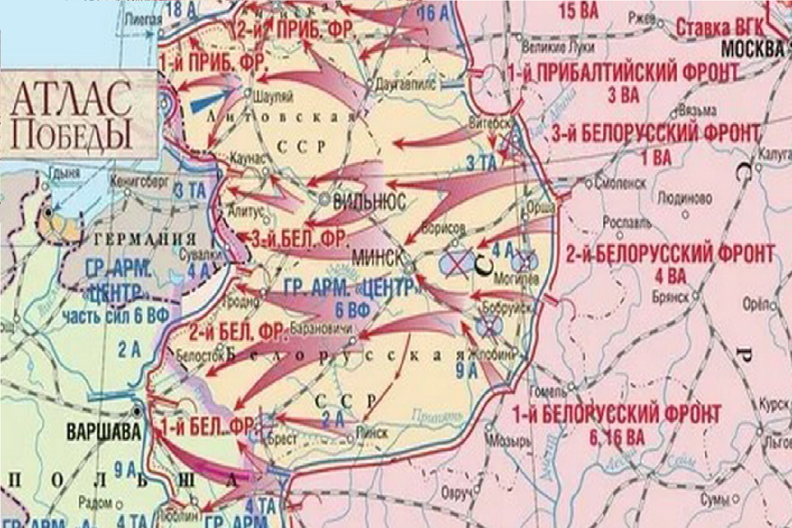
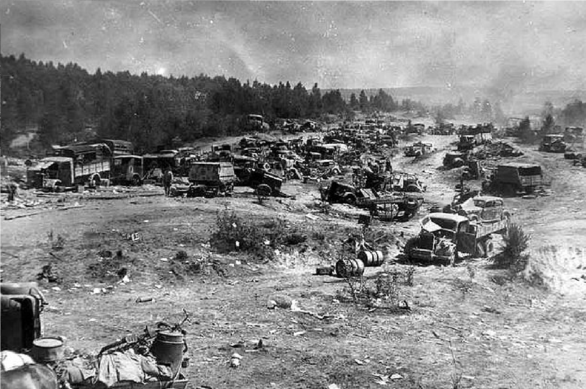
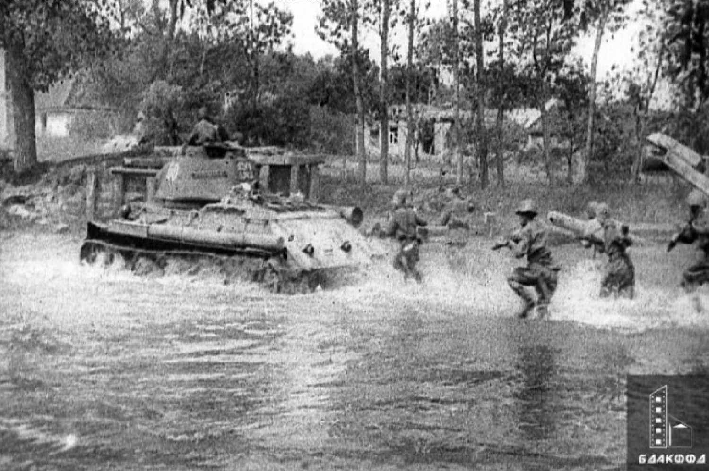

1944
|  |
|
|
Основные факты об операции Багратион: 1. Цели операцииОсновной целью операции было уничтожение группировки немецких войск, находившейся в Белaруси, и освобождение её территории. Операция также ставила задачу создать условия для дальнейшего наступления на территорию Польши и Восточной Европы. 2. ПодготовкаНазвание операции связано с русским полководцем XII-XIII веков Георгием Багратионом. Подготовка операции продолжалась несколько месяцев, в итоге был разработан детализированный план, учитывающий ошибки предыдущих операций. 3. Начало операцииОперация Багратион началась 22 июня 1944 года, в день третьей годовщины начала войны. Наступление началось с мощного артиллерийского удара и атак с воздуха. 4. Силы сторонКрасная Армия на момент начала операции насчитывала около 1,5 миллиона человек, более 3 тысяч танков и 4,5 тысяч артиллерийских орудий. Противник, немецкие войска, хотя и были численно уступали, располагали мощной обороной и опытом ведения боевых действий. 5. Ход операцииОперация развивалась стремительно. В течение нескольких недель Красная Армия освободила значительные территории, включая Минск. Немецкое командование не ожидало такой мощи и скорости наступления, что привело к значительным потерям с их стороны. 6. ПотериПо различным оценкам, немецкие потери составили около 300 тысяч солдат убитыми, пленными и пропавшими без вести, тогда как Советский Союз понёс потери в размере 180-200 тысяч человек. |
 |
|  |
Операция Багратион завершилась 19 августа 1944 года и стала одной из самых успешных наступательных операций Второй мировой войны. Красная Армия освободила огромные территории, уничтожила большую часть немецкой группировки, что существенно ослабило врага на Восточном фронте.Операция Багратион продемонстрировала не только военное мастерство Красной Армии, но и её умение адаптироваться к условиям ведения войны, а также привела к значительным изменениям в ходе всей войны, что способствовало победе СССР над нацистской Германией. |